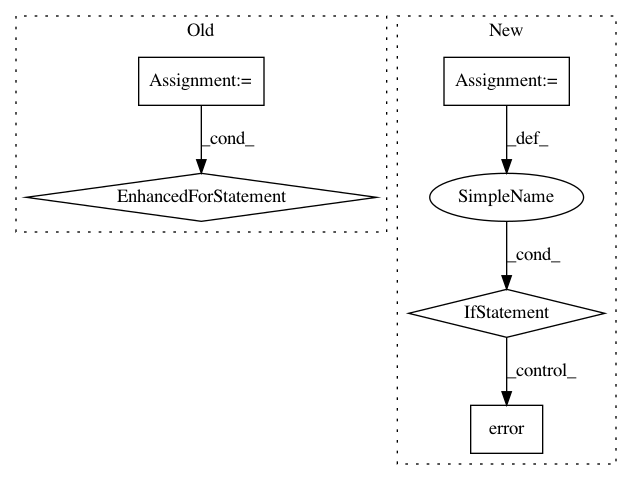

283f4d1060060d3a10a62ac5d74c9ca45c596791,python/ray/autoscaler/command_runner.py,DockerCommandRunner,run_init,#DockerCommandRunner#,695
Before Change
// Copy bootstrap config & key over
if as_head:
for copy_cmd in docker_autoscaler_setup(self.container_name):
self.run(copy_cmd, run_env="host")
self.initialized = True
After Change
]
for remote, local in file_mounts.items():
remote = self._docker_expand_user(remote)
if remote not in active_remote_mounts:
cli_logger.error(
"Please ray stop & restart cluster to "
f"allow mount {remote}:{local} to take hold")
except json.JSONDecodeError:
cli_logger.verbose(
"Unable to check if file_mounts specified in the YAML "
"differ from those on the running container.")
In pattern: SUPERPATTERN
Frequency: 4
Non-data size: 5
Instances
Project Name: ray-project/ray
Commit Name: 283f4d1060060d3a10a62ac5d74c9ca45c596791
Time: 2020-09-01
Author: ian.rodney@gmail.com
File Name: python/ray/autoscaler/command_runner.py
Class Name: DockerCommandRunner
Method Name: run_init
Project Name: streamlit/streamlit
Commit Name: 883644354ca6c016a9b79d67e0494db88a823c23
Time: 2018-08-14
Author: armando@playground.global
File Name: lib/streamlit/proxy/Proxy.py
Class Name:
Method Name: _print_remote_url
Project Name: streamlit/streamlit
Commit Name: 01bf5dd323bebd66b7ad60fdaee34eb8f7b76aae
Time: 2018-08-09
Author: armando@playground.global
File Name: lib/streamlit/proxy/Proxy.py
Class Name:
Method Name: _print_remote_url
Project Name: streamlit/streamlit
Commit Name: ddea47a633bf2cf97c69951467fdb1cc586485f1
Time: 2018-10-12
Author: adrien.g.treuille@gmail.com
File Name: lib/streamlit/Connection.py
Class Name: Connection
Method Name: _cleanup_on_exit